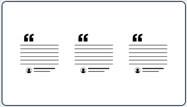
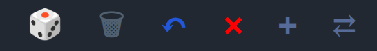
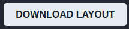

1. Scegli gli elementi
Aggiungi i blocchi di layout proposti al foglio di lavoro
Progetta la struttura del tuo sito prima di scrivere il codice. Webbo Layout ti aiuta a organizzare header, contenuti, immagini e sezioni in una bozza visiva, da usare come guida durante lo sviluppo in HTML e CSS.
Costruisci il tuo layoutAggiungi i blocchi di layout proposti al foglio di lavoro

Organizza gli elementi attraverso la barra di comando fino a ottenere la struttura desiderata

Scarica l’immagine del layout e usala come riferimento mentre scrivi il codice

visualizzare la struttura di una pagina prima di scrivere in HTML
fare esercizi di progettazione web senza partire dal codice
preparare rapidamente wireframe semplici e condividerli
Sì, Webbo Layout è totalmente gratuito
No, non è richiesta nessuna iscrizione per usare Webbo Layout
No, Webbo Layout si può usare direttamente dal browser
Sì, puoi scaricare la composizione realizzata come immagine
Puoi usarlo come bozza visiva per progettare una pagina web, pianificare la disposizione dei contenuti ed usarla come guida visiva mentre scrivi e costruisci il tuo sito.
Scrivimi idee, funzioni che vorresti trovare o segnalazioni su Webbo Layout. Ogni messaggio è utile per migliorare il progetto.